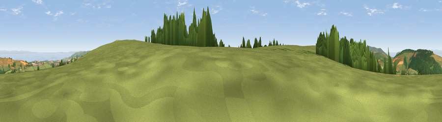

Viewpoint near Luxborough
#3653 in England · top 13% of its area beats it · near Luxborough · path 254 mWhere it is
The exact computed spot (SS 99888 35300). Click the marker for map links.
Public access: the nearest public right of way is about 254 m away — the final stretch may cross private land. Computed from Natural England's CRoW access layer and OpenStreetMap rights of way — not the legal definitive map. Always verify locally.
The view, rendered

A 360° render of this exact spot computed from the terrain model, tree cover and land cover — summer colours, afternoon light, calibrated against photographs of famous viewpoints. Real trees, hedges and buildings will differ in detail.
The panorama
Grey silhouette: terrain skyline in each direction (720 bearings, Earth curvature and refraction included). Dashed green: skyline with trees (+15 m) and buildings (+8 m) as obstacles. Blue strip: how far the ground is visible on each bearing.
Where the view opens
Wedge length = distance to the farthest visible ground on that bearing (vegetation-aware). Rings at 10, 25 and 50 km.
What fills the view
50% grassland · 34% woodland · 9% water · 6% cropland
Angular shares of the visible panorama (visual magnitude), not map area. Landscape diversity 0.49 (0–1 Shannon).
Key numbers
More beautiful places nearby
The staircase of upgrades: each row has a higher view potential than everything closer. Driving times are estimates from straight-line distance, calibrated against real road routing — check an actual route before setting out.
| Place | Direction | Drive | Score |
|---|---|---|---|
| Viewpoint near Roadwater | ENE · 2 km | ~5 min | 82.9 |
| Viewpoint near Roadwater | NNE · 3 km | ~8 min | 85.2 |
| Viewpoint near Luxborough | NNW · 5 km | ~11 min | 85.5 |
| Viewpoint near Minehead | NNW · 13 km | ~24 min | 86.2 |
| North Hill | NNW · 13 km | ~24 min | 86.3 |
| Viewpoint near West Quantoxhead | ENE · 14 km | ~25 min | 88.7 |
| Holdstone Hill | WNW · 40 km | ~59 min | 90.2 |
| The Knoll | SE · 72 km | ~95 min | 91.0 |
51.10822, -3.43142 · source: screening · position refined by local search. Computed location — check access rights before visiting.